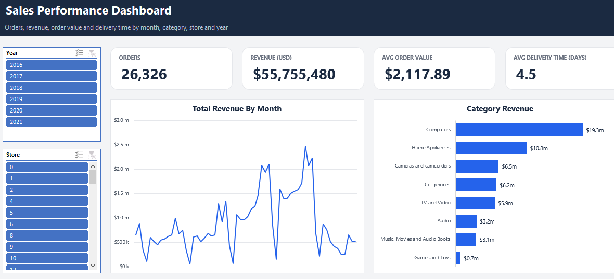

Electronics retailer sales model
The problem
A global retailer's data arrived as six separate CSV files covering sales, customers, products, stores and exchange rates. On their own none of them answer a business question: a sales row records its customer and product as ID numbers only, prices are held in US dollars while stores trade locally, and there is no date table to report by month or quarter.
What I did
I built a single refreshable model rather than a one-off spreadsheet. Power Query loads and cleans each file, deriving customer age and age bands and building a calendar table from the sales date range. Those tables then feed a star schema in the data model:
- A sales table of 62,884 line items joined to customers, products, stores and the calendar
- Exchange rates linked on a combined date and currency key, so revenue can be reported in local currency as well as US dollars
- Measures for total orders, revenue, average order value and average delivery time
- A dashboard of KPI cards, revenue by month and by category, filtered by year and store

The result
Six files become one model covering 26,326 orders and $55.8m of revenue, where computers alone account for $19.3m. Because the figures are measures rather than formulas written against cells, the same model answers questions at any level: a single store, one year, or the whole business. Refreshing it means replacing the source files, not rebuilding the report.